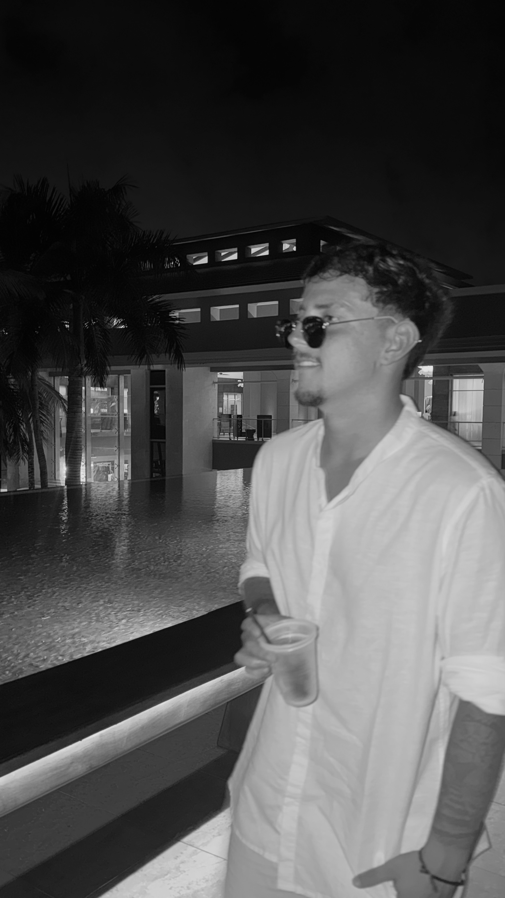

Julián
Palavecino
ESTUDIANTE DE DISEÑO MULTIMEDIAL
Mi nombre es Julián Palavecino, tengo 22 años. Actualmente trabajo en el Ministerio de Educación y, en paralelo, curso la carrera de Diseño Multimedial, con interés en el desarrollo de contenidos y la comunicación visual.
En mi vida cotidiana, el deporte ocupa un lugar importante, hago fútbol desde muy chico, entreno regularmente y salgo a correr, lo cual siento que es algo importante para mantener mi equilibrio personal y mental.
Además, me encanta compartir tiempo con amigos y considero a mi familia un pilar central en mi vida.
Me defino como una persona responsable, constante y comprometida con mis objetivos, tanto en el ámbito académico como en el laboral.

Mi perfil en Instagram
https://www.instagram.com/julipalaa